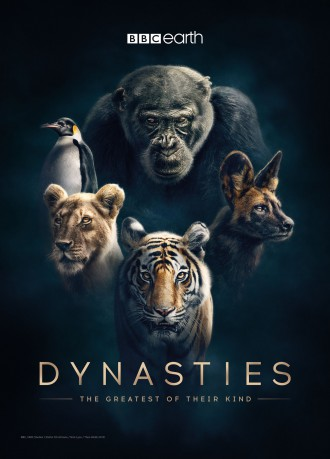

")
Alternativ: Dynasties (Originaltitel)
 
 IMDB-Wertung: 9.3 / 10
IMDB-Wertung: 9.3 / 10  Metascore:
Metascore: 
"Wilde Dynastien" schreibt die Geschichte der Naturdokumentation neu. Fünf Folgen über fünf Tierarten, die zu den faszinierendsten und gefährdetsten auf dem Planeten zählen
Jahr: 2018
Dauer: 43 Minuten
FSK:
Land: England Studio: BBC WorldwideTonspuren:
Untertitel:
Auflösung: 720p (1280x720) Größe: 1361 MB
Genre: Dokumentation, TV-Serie
Regisseur: Simon Blakeney, Will Lawson, Nick Lyon, Rosie Thomas, Theo Webb
Drehbuch:
Soundtrack:
Darsteller:
Datei: X:\Dokumentationen\Tiere\Wilde Dynastien\1. Revolte der Schimpansen.mkv seit 12.05.2019
Festplatte: HD Serien(SU-Z)+Dokus+Musik
 Es gibt insgesamt 37 Filme in der Gruppe 'Dokumentationen\Tiere'
Es gibt insgesamt 37 Filme in der Gruppe 'Dokumentationen\Tiere'